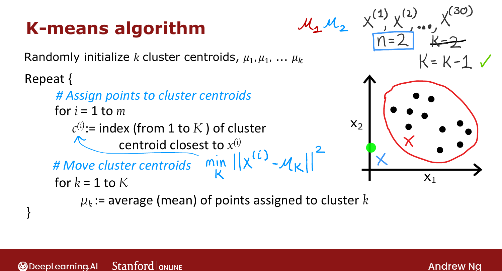
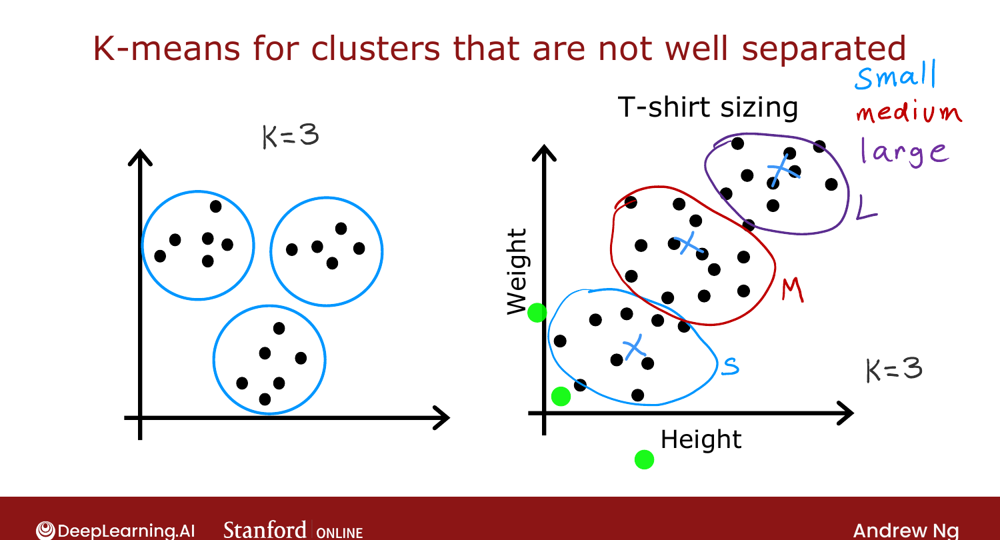

K-means Algorithm¶
Course 3 · Week 1 · AI-generated study aid — not authoritative; trust the lecture & cited sources.
The two intuitive steps, written out precisely. [00:02]
The algorithm¶
Randomly initialize K cluster centroids μ₁, μ₂, …, μ_K
Repeat {
# Step 1 — assign points to centroids
for i = 1 to m:
c⁽ⁱ⁾ := index k (1..K) of the centroid closest to x⁽ⁱ⁾
= argmin_k ‖x⁽ⁱ⁾ − μ_k‖²
# Step 2 — move centroids
for k = 1 to K:
μ_k := mean of the points assigned to cluster k
}
- The centroids \(\mu_k\) are vectors with the same dimension \(n\) as the training examples.
[01:05] - Step 1 sets \(c^{(i)}\) to the cluster whose centroid minimizes the squared distance
\(\|x^{(i)} - \mu_k\|^2\) (the L2 norm; squaring is more convenient and gives the same
nearest centroid).
[02:38] - Step 2 sets each \(\mu_k\) to the average of the points assigned to it. If cluster 1
holds examples 1, 5, 6, 10, then \(\mu_1 = \frac{1}{4}(x^{(1)}+x^{(5)}+x^{(6)}+x^{(10)})\).
[05:33]

Official C3 slide — the K-means algorithm (DeepLearning.AI / Stanford).Corner case: an empty cluster¶
If a cluster gets zero points assigned, the mean is undefined. Most common fix:
eliminate that cluster (ending with \(K-1\)). Alternatively, randomly reinitialize it
and hope it picks up points next round. [06:38]
Clusters that aren't well separated¶
K-means is also used when clusters aren't clearly separated. For t-shirt sizing,
people's height/weight vary continuously with no clear groups — yet running K-means with 3
centroids carves out sensible small / medium / large groups to design each size around. [07:36]

Official C3 slide — K-means on not-well-separated data (DeepLearning.AI / Stanford).Next: the cost function K-means is secretly optimizing. [--]
Try it in the browser¶
Try it — implement the K-means assignment step — edit the code, then hit Validate for instant ✓/✗ (runs real Python via Pyodide, no setup):
# Tests(case insensitive)(Ctrl+I)
(Alt+: / Ctrl to reverse the columns)
(Esc)